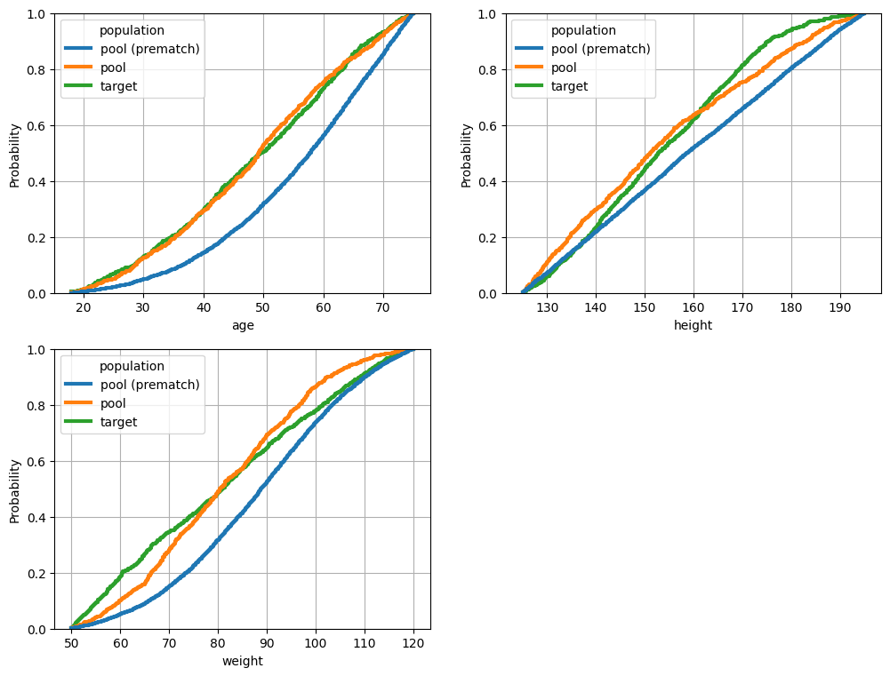

Genetic Matcher
The GeneticMatcher can be used to optimize any function of the baseline covariates, both linear and non-linear. In this demo notebook, we show how to call the matcher in the PyBalance library, including an example of a non-linear balance function.
[1]:
import logging
logging.basicConfig(
format="%(levelname)-4s [%(filename)s:%(lineno)d] %(message)s",
level='INFO',
)
from pybalance.sim import generate_toy_dataset
from pybalance.utils import (
BetaBalance,
BetaSquaredBalance,
BetaXBalance,
BetaMaxBalance,
GammaBalance,
GammaSquaredBalance,
GammaXBalance,
GammaXTreeBalance,
MatchingData
)
from pybalance.genetic import GeneticMatcher, get_global_defaults
from pybalance.visualization import (
plot_numeric_features,
plot_categoric_features,
plot_binary_features,
plot_per_feature_loss,
plot_joint_numeric_distributions
)
time_limit = 300
INFO [__init__.py:13] Loaded pybalance version 0.1.0.
[2]:
m = generate_toy_dataset()
m
[2]:
Headers Numeric:
['age', 'height', 'weight']
Headers Categoric:
['gender', 'haircolor', 'country', 'binary_0', 'binary_1', 'binary_2', 'binary_3']
Populations
['pool', 'target']
['age', 'height', 'weight']
Headers Categoric:
['gender', 'haircolor', 'country', 'binary_0', 'binary_1', 'binary_2', 'binary_3']
Populations
['pool', 'target']
| age | height | weight | gender | haircolor | country | population | binary_0 | binary_1 | binary_2 | binary_3 | patient_id | |
|---|---|---|---|---|---|---|---|---|---|---|---|---|
| 0 | 62.511573 | 190.229250 | 105.165097 | 0.0 | 2 | 3 | pool | 0 | 0 | 0 | 0 | 0 |
| 1 | 68.505065 | 161.121236 | 95.001474 | 0.0 | 1 | 1 | pool | 1 | 0 | 1 | 0 | 1 |
| 2 | 50.071384 | 162.325356 | 84.290576 | 1.0 | 0 | 5 | pool | 0 | 0 | 1 | 1 | 2 |
| 3 | 44.423692 | 150.948096 | 82.031381 | 1.0 | 2 | 2 | pool | 0 | 0 | 0 | 1 | 3 |
| 4 | 41.695052 | 132.952651 | 54.857540 | 0.0 | 1 | 3 | pool | 0 | 0 | 1 | 1 | 4 |
| ... | ... | ... | ... | ... | ... | ... | ... | ... | ... | ... | ... | ... |
| 995 | 21.474205 | 168.602546 | 70.342128 | 0.0 | 2 | 5 | target | 0 | 0 | 0 | 1 | 10995 |
| 996 | 40.643320 | 188.188724 | 61.611744 | 0.0 | 2 | 4 | target | 1 | 0 | 0 | 1 | 10996 |
| 997 | 29.472765 | 161.408162 | 57.214095 | 0.0 | 0 | 1 | target | 0 | 1 | 1 | 1 | 10997 |
| 998 | 41.291949 | 150.968833 | 91.270798 | 0.0 | 0 | 3 | target | 0 | 0 | 0 | 0 | 10998 |
| 999 | 67.530294 | 155.124741 | 56.196505 | 1.0 | 0 | 1 | target | 1 | 0 | 0 | 0 | 10999 |
11000 rows × 12 columns
Optimize Beta (Mean Absolute SMD)
[3]:
objective = beta = BetaBalance(m)
matcher = matcher_beta = GeneticMatcher(
matching_data = m,
objective = objective,
log_every = 1000,
n_generations = 5000,
time_limit = time_limit
)
matcher.get_params()
INFO [matcher.py:127] cpu
[3]:
{'objective': 'beta',
'candidate_population_size': 1000,
'n_candidate_populations': 1024,
'n_keep_best': 256,
'n_voting_populations': 256,
'n_mutation': 256,
'n_generations': 5000,
'n_iter_no_change': 100,
'time_limit': 300,
'max_batch_size_gb': 2,
'seed': 1234,
'verbose': True,
'log_every': 1000,
'initialization': {'benchmarks': {'propensity': 'include'},
'sampling': {'propensity': 1.0, 'uniform': 1.0}}}
[4]:
matcher_beta.match()
INFO [initialization.py:34] Optimizing balance with genetic algorithm ...
INFO [initialization.py:35] Initial balance scores:
INFO [initialization.py:40] beta: 0.233
INFO [initialization.py:41] Initializing candidate populations ...
INFO [initialization.py:89] Computing PROPENSITY 1-1 matching method ...
INFO [matcher.py:181] Training model SGDClassifier (iter 1/50, 0.003 min) ...
INFO [matcher.py:137] Best propensity score match found:
INFO [matcher.py:138] Model: SGDClassifier
INFO [matcher.py:140] * alpha: 1.5074398973827778
INFO [matcher.py:140] * class_weight: None
INFO [matcher.py:140] * early_stopping: True
INFO [matcher.py:140] * fit_intercept: True
INFO [matcher.py:140] * loss: log_loss
INFO [matcher.py:140] * max_iter: 1500
INFO [matcher.py:140] * penalty: l2
INFO [matcher.py:141] Score (beta): 0.0525
INFO [matcher.py:142] Solution time: 0.008 min
INFO [matcher.py:181] Training model LogisticRegression (iter 2/50, 0.009 min) ...
INFO [matcher.py:137] Best propensity score match found:
INFO [matcher.py:138] Model: LogisticRegression
INFO [matcher.py:140] * C: 0.05835496346821341
INFO [matcher.py:140] * fit_intercept: True
INFO [matcher.py:140] * max_iter: 500
INFO [matcher.py:140] * penalty: l2
INFO [matcher.py:140] * solver: saga
INFO [matcher.py:141] Score (beta): 0.0291
INFO [matcher.py:142] Solution time: 0.014 min
INFO [matcher.py:181] Training model LogisticRegression (iter 3/50, 0.014 min) ...
/usr/local/lib/python3.8/site-packages/sklearn/linear_model/_sag.py:350: ConvergenceWarning: The max_iter was reached which means the coef_ did not converge
warnings.warn(
INFO [matcher.py:181] Training model SGDClassifier (iter 4/50, 0.074 min) ...
INFO [matcher.py:181] Training model LogisticRegression (iter 5/50, 0.079 min) ...
/usr/local/lib/python3.8/site-packages/sklearn/linear_model/_sag.py:350: ConvergenceWarning: The max_iter was reached which means the coef_ did not converge
warnings.warn(
INFO [matcher.py:181] Training model LogisticRegression (iter 6/50, 0.136 min) ...
INFO [matcher.py:181] Training model LogisticRegression (iter 7/50, 0.141 min) ...
INFO [matcher.py:181] Training model SGDClassifier (iter 8/50, 0.146 min) ...
INFO [matcher.py:181] Training model LogisticRegression (iter 9/50, 0.150 min) ...
INFO [matcher.py:181] Training model LogisticRegression (iter 10/50, 0.193 min) ...
INFO [matcher.py:181] Training model LogisticRegression (iter 11/50, 0.198 min) ...
INFO [matcher.py:181] Training model SGDClassifier (iter 12/50, 0.203 min) ...
INFO [matcher.py:181] Training model SGDClassifier (iter 13/50, 0.208 min) ...
INFO [matcher.py:181] Training model SGDClassifier (iter 14/50, 0.213 min) ...
INFO [matcher.py:181] Training model SGDClassifier (iter 15/50, 0.217 min) ...
INFO [matcher.py:181] Training model SGDClassifier (iter 16/50, 0.221 min) ...
INFO [matcher.py:181] Training model SGDClassifier (iter 17/50, 0.226 min) ...
INFO [matcher.py:181] Training model LogisticRegression (iter 18/50, 0.231 min) ...
INFO [matcher.py:137] Best propensity score match found:
INFO [matcher.py:138] Model: LogisticRegression
INFO [matcher.py:140] * C: 2.390557089970641
INFO [matcher.py:140] * fit_intercept: True
INFO [matcher.py:140] * max_iter: 500
INFO [matcher.py:140] * penalty: l2
INFO [matcher.py:140] * solver: saga
INFO [matcher.py:141] Score (beta): 0.0289
INFO [matcher.py:142] Solution time: 0.238 min
INFO [matcher.py:181] Training model LogisticRegression (iter 19/50, 0.239 min) ...
INFO [matcher.py:181] Training model SGDClassifier (iter 20/50, 0.274 min) ...
INFO [matcher.py:181] Training model SGDClassifier (iter 21/50, 0.280 min) ...
INFO [matcher.py:181] Training model SGDClassifier (iter 22/50, 0.286 min) ...
INFO [matcher.py:181] Training model SGDClassifier (iter 23/50, 0.295 min) ...
INFO [matcher.py:181] Training model LogisticRegression (iter 24/50, 0.299 min) ...
INFO [matcher.py:181] Training model SGDClassifier (iter 25/50, 0.304 min) ...
INFO [matcher.py:181] Training model LogisticRegression (iter 26/50, 0.308 min) ...
INFO [matcher.py:137] Best propensity score match found:
INFO [matcher.py:138] Model: LogisticRegression
INFO [matcher.py:140] * C: 0.26994114136168157
INFO [matcher.py:140] * fit_intercept: True
INFO [matcher.py:140] * max_iter: 500
INFO [matcher.py:140] * penalty: l1
INFO [matcher.py:140] * solver: saga
INFO [matcher.py:141] Score (beta): 0.0288
INFO [matcher.py:142] Solution time: 0.314 min
INFO [matcher.py:181] Training model LogisticRegression (iter 27/50, 0.314 min) ...
INFO [matcher.py:181] Training model LogisticRegression (iter 28/50, 0.321 min) ...
INFO [matcher.py:181] Training model SGDClassifier (iter 29/50, 0.372 min) ...
INFO [matcher.py:181] Training model LogisticRegression (iter 30/50, 0.375 min) ...
INFO [matcher.py:181] Training model SGDClassifier (iter 31/50, 0.384 min) ...
INFO [matcher.py:181] Training model LogisticRegression (iter 32/50, 0.390 min) ...
INFO [matcher.py:181] Training model SGDClassifier (iter 33/50, 0.395 min) ...
INFO [matcher.py:181] Training model SGDClassifier (iter 34/50, 0.400 min) ...
INFO [matcher.py:181] Training model LogisticRegression (iter 35/50, 0.404 min) ...
/usr/local/lib/python3.8/site-packages/sklearn/linear_model/_sag.py:350: ConvergenceWarning: The max_iter was reached which means the coef_ did not converge
warnings.warn(
INFO [matcher.py:181] Training model LogisticRegression (iter 36/50, 0.471 min) ...
INFO [matcher.py:181] Training model LogisticRegression (iter 37/50, 0.486 min) ...
/usr/local/lib/python3.8/site-packages/sklearn/linear_model/_sag.py:350: ConvergenceWarning: The max_iter was reached which means the coef_ did not converge
warnings.warn(
INFO [matcher.py:137] Best propensity score match found:
INFO [matcher.py:138] Model: LogisticRegression
INFO [matcher.py:140] * C: 0.5868985298319502
INFO [matcher.py:140] * fit_intercept: False
INFO [matcher.py:140] * max_iter: 500
INFO [matcher.py:140] * penalty: l1
INFO [matcher.py:140] * solver: saga
INFO [matcher.py:141] Score (beta): 0.0249
INFO [matcher.py:142] Solution time: 0.555 min
INFO [matcher.py:181] Training model SGDClassifier (iter 38/50, 0.556 min) ...
INFO [matcher.py:181] Training model SGDClassifier (iter 39/50, 0.561 min) ...
INFO [matcher.py:181] Training model LogisticRegression (iter 40/50, 0.566 min) ...
INFO [matcher.py:181] Training model SGDClassifier (iter 41/50, 0.572 min) ...
INFO [matcher.py:181] Training model LogisticRegression (iter 42/50, 0.577 min) ...
INFO [matcher.py:181] Training model LogisticRegression (iter 43/50, 0.617 min) ...
INFO [matcher.py:181] Training model SGDClassifier (iter 44/50, 0.682 min) ...
INFO [matcher.py:181] Training model SGDClassifier (iter 45/50, 0.687 min) ...
INFO [matcher.py:181] Training model LogisticRegression (iter 46/50, 0.694 min) ...
/usr/local/lib/python3.8/site-packages/sklearn/linear_model/_sag.py:350: ConvergenceWarning: The max_iter was reached which means the coef_ did not converge
warnings.warn(
INFO [matcher.py:181] Training model LogisticRegression (iter 47/50, 0.756 min) ...
/usr/local/lib/python3.8/site-packages/sklearn/linear_model/_sag.py:350: ConvergenceWarning: The max_iter was reached which means the coef_ did not converge
warnings.warn(
INFO [matcher.py:181] Training model SGDClassifier (iter 48/50, 0.819 min) ...
INFO [matcher.py:181] Training model SGDClassifier (iter 49/50, 0.824 min) ...
INFO [matcher.py:181] Training model LogisticRegression (iter 50/50, 0.828 min) ...
INFO [matcher.py:137] Best propensity score match found:
INFO [matcher.py:138] Model: LogisticRegression
INFO [matcher.py:140] * C: 0.5868985298319502
INFO [matcher.py:140] * fit_intercept: False
INFO [matcher.py:140] * max_iter: 500
INFO [matcher.py:140] * penalty: l1
INFO [matcher.py:140] * solver: saga
INFO [matcher.py:141] Score (beta): 0.0249
INFO [matcher.py:142] Solution time: 0.555 min
INFO [initialization.py:69] beta: 0.025
INFO [initialization.py:74] Included in initial population.
INFO [initialization.py:135] Sampling 512 candidate populations according to PROPENSITY distribution ...
INFO [initialization.py:135] Sampling 511 candidate populations according to UNIFORM distribution ...
INFO [logger.py:38] Generation 0
INFO [logger.py:39] remaining patients: 10000
INFO [logger.py:40] elapsed time: 0.89 min
INFO [logger.py:49] best beta: 0.02494 worst beta: 0.25118
INFO [matcher.py:213] Time limit exceeded. Stopping.
[4]:
Headers Numeric:
['age', 'height', 'weight']
Headers Categoric:
['gender', 'haircolor', 'country', 'binary_0', 'binary_1', 'binary_2', 'binary_3']
Populations
['pool', 'target']
['age', 'height', 'weight']
Headers Categoric:
['gender', 'haircolor', 'country', 'binary_0', 'binary_1', 'binary_2', 'binary_3']
Populations
['pool', 'target']
| age | height | weight | gender | haircolor | country | population | binary_0 | binary_1 | binary_2 | binary_3 | patient_id | |
|---|---|---|---|---|---|---|---|---|---|---|---|---|
| 0 | 55.261578 | 139.396134 | 94.438359 | 0.0 | 2 | 2 | target | 0 | 0 | 1 | 1 | 10000 |
| 1 | 63.113091 | 165.563337 | 67.433016 | 1.0 | 2 | 2 | target | 0 | 1 | 1 | 0 | 10001 |
| 2 | 58.232216 | 160.859857 | 71.915385 | 1.0 | 0 | 2 | target | 0 | 0 | 0 | 0 | 10002 |
| 3 | 58.996941 | 140.357415 | 115.606615 | 1.0 | 0 | 3 | target | 1 | 1 | 0 | 0 | 10003 |
| 4 | 36.850195 | 189.983706 | 53.000581 | 0.0 | 2 | 5 | target | 0 | 0 | 0 | 0 | 10004 |
| ... | ... | ... | ... | ... | ... | ... | ... | ... | ... | ... | ... | ... |
| 1112 | 41.629635 | 184.070238 | 89.104386 | 1.0 | 1 | 5 | pool | 1 | 0 | 0 | 1 | 1112 |
| 3201 | 65.983796 | 143.585419 | 85.288685 | 0.0 | 2 | 3 | pool | 0 | 1 | 1 | 0 | 3201 |
| 8918 | 51.343352 | 147.636272 | 71.272276 | 0.0 | 2 | 2 | pool | 0 | 1 | 1 | 0 | 8918 |
| 106 | 57.306919 | 177.491110 | 89.600459 | 1.0 | 1 | 2 | pool | 0 | 0 | 0 | 0 | 106 |
| 4489 | 41.355307 | 135.700502 | 65.057679 | 0.0 | 2 | 4 | pool | 0 | 0 | 0 | 1 | 4489 |
2000 rows × 12 columns
[5]:
%matplotlib inline
match = matcher_beta.get_best_match()
m_data = m.copy().get_population('pool')
m_data.loc[:, 'population'] = m_data['population'] + ' (prematch)'
match.append(m_data)
fig = plot_per_feature_loss(match, beta, 'target', debin=False)
fig = plot_numeric_features(match, hue_order=['pool (prematch)', 'pool', 'target', ])
fig = plot_categoric_features(match, hue_order=['pool (prematch)', 'pool', 'target'])

Optimize Beta^2
[6]:
objective = beta2 = BetaSquaredBalance(m)
matcher = matcher_beta2 = GeneticMatcher(
matching_data = m,
objective = objective,
log_every = 1000,
n_generations = 5000,
time_limit = time_limit
)
matcher.get_params()
INFO [matcher.py:127] cpu
[6]:
{'objective': 'beta_squared',
'candidate_population_size': 1000,
'n_candidate_populations': 1024,
'n_keep_best': 256,
'n_voting_populations': 256,
'n_mutation': 256,
'n_generations': 5000,
'n_iter_no_change': 100,
'time_limit': 300,
'max_batch_size_gb': 2,
'seed': 1234,
'verbose': True,
'log_every': 1000,
'initialization': {'benchmarks': {'propensity': 'include'},
'sampling': {'propensity': 1.0, 'uniform': 1.0}}}
[7]:
match = matcher.match()
INFO [initialization.py:34] Optimizing balance with genetic algorithm ...
INFO [initialization.py:35] Initial balance scores:
INFO [initialization.py:40] beta_squared: 0.263
INFO [initialization.py:41] Initializing candidate populations ...
INFO [initialization.py:89] Computing PROPENSITY 1-1 matching method ...
INFO [matcher.py:181] Training model SGDClassifier (iter 1/50, 0.001 min) ...
INFO [matcher.py:137] Best propensity score match found:
INFO [matcher.py:138] Model: SGDClassifier
INFO [matcher.py:140] * alpha: 1.5074398973827778
INFO [matcher.py:140] * class_weight: None
INFO [matcher.py:140] * early_stopping: True
INFO [matcher.py:140] * fit_intercept: True
INFO [matcher.py:140] * loss: log_loss
INFO [matcher.py:140] * max_iter: 1500
INFO [matcher.py:140] * penalty: l2
INFO [matcher.py:141] Score (beta_squared): 0.0603
INFO [matcher.py:142] Solution time: 0.005 min
INFO [matcher.py:181] Training model LogisticRegression (iter 2/50, 0.005 min) ...
INFO [matcher.py:137] Best propensity score match found:
INFO [matcher.py:138] Model: LogisticRegression
INFO [matcher.py:140] * C: 0.05835496346821341
INFO [matcher.py:140] * fit_intercept: True
INFO [matcher.py:140] * max_iter: 500
INFO [matcher.py:140] * penalty: l2
INFO [matcher.py:140] * solver: saga
INFO [matcher.py:141] Score (beta_squared): 0.0374
INFO [matcher.py:142] Solution time: 0.009 min
INFO [matcher.py:181] Training model LogisticRegression (iter 3/50, 0.010 min) ...
/usr/local/lib/python3.8/site-packages/sklearn/linear_model/_sag.py:350: ConvergenceWarning: The max_iter was reached which means the coef_ did not converge
warnings.warn(
INFO [matcher.py:137] Best propensity score match found:
INFO [matcher.py:138] Model: LogisticRegression
INFO [matcher.py:140] * C: 16.16555309446664
INFO [matcher.py:140] * fit_intercept: False
INFO [matcher.py:140] * max_iter: 500
INFO [matcher.py:140] * penalty: l1
INFO [matcher.py:140] * solver: saga
INFO [matcher.py:141] Score (beta_squared): 0.0357
INFO [matcher.py:142] Solution time: 0.062 min
INFO [matcher.py:181] Training model SGDClassifier (iter 4/50, 0.062 min) ...
INFO [matcher.py:181] Training model LogisticRegression (iter 5/50, 0.066 min) ...
/usr/local/lib/python3.8/site-packages/sklearn/linear_model/_sag.py:350: ConvergenceWarning: The max_iter was reached which means the coef_ did not converge
warnings.warn(
INFO [matcher.py:137] Best propensity score match found:
INFO [matcher.py:138] Model: LogisticRegression
INFO [matcher.py:140] * C: 54.02072493419675
INFO [matcher.py:140] * fit_intercept: False
INFO [matcher.py:140] * max_iter: 500
INFO [matcher.py:140] * penalty: l2
INFO [matcher.py:140] * solver: saga
INFO [matcher.py:141] Score (beta_squared): 0.0347
INFO [matcher.py:142] Solution time: 0.113 min
INFO [matcher.py:181] Training model LogisticRegression (iter 6/50, 0.113 min) ...
INFO [matcher.py:181] Training model LogisticRegression (iter 7/50, 0.119 min) ...
INFO [matcher.py:181] Training model SGDClassifier (iter 8/50, 0.125 min) ...
INFO [matcher.py:181] Training model LogisticRegression (iter 9/50, 0.129 min) ...
INFO [matcher.py:181] Training model LogisticRegression (iter 10/50, 0.165 min) ...
INFO [matcher.py:181] Training model LogisticRegression (iter 11/50, 0.170 min) ...
INFO [matcher.py:181] Training model SGDClassifier (iter 12/50, 0.175 min) ...
INFO [matcher.py:181] Training model SGDClassifier (iter 13/50, 0.179 min) ...
INFO [matcher.py:181] Training model SGDClassifier (iter 14/50, 0.183 min) ...
INFO [matcher.py:181] Training model SGDClassifier (iter 15/50, 0.187 min) ...
INFO [matcher.py:181] Training model SGDClassifier (iter 16/50, 0.190 min) ...
INFO [matcher.py:181] Training model SGDClassifier (iter 17/50, 0.194 min) ...
INFO [matcher.py:181] Training model LogisticRegression (iter 18/50, 0.198 min) ...
INFO [matcher.py:181] Training model LogisticRegression (iter 19/50, 0.203 min) ...
INFO [matcher.py:181] Training model SGDClassifier (iter 20/50, 0.227 min) ...
INFO [matcher.py:181] Training model SGDClassifier (iter 21/50, 0.231 min) ...
INFO [matcher.py:181] Training model SGDClassifier (iter 22/50, 0.235 min) ...
INFO [matcher.py:181] Training model SGDClassifier (iter 23/50, 0.238 min) ...
INFO [matcher.py:181] Training model LogisticRegression (iter 24/50, 0.241 min) ...
INFO [matcher.py:181] Training model SGDClassifier (iter 25/50, 0.247 min) ...
INFO [matcher.py:181] Training model LogisticRegression (iter 26/50, 0.251 min) ...
INFO [matcher.py:181] Training model LogisticRegression (iter 27/50, 0.256 min) ...
INFO [matcher.py:181] Training model LogisticRegression (iter 28/50, 0.262 min) ...
INFO [matcher.py:181] Training model SGDClassifier (iter 29/50, 0.303 min) ...
INFO [matcher.py:181] Training model LogisticRegression (iter 30/50, 0.307 min) ...
INFO [matcher.py:181] Training model SGDClassifier (iter 31/50, 0.313 min) ...
INFO [matcher.py:181] Training model LogisticRegression (iter 32/50, 0.317 min) ...
INFO [matcher.py:181] Training model SGDClassifier (iter 33/50, 0.321 min) ...
INFO [matcher.py:181] Training model SGDClassifier (iter 34/50, 0.325 min) ...
INFO [matcher.py:181] Training model LogisticRegression (iter 35/50, 0.327 min) ...
/usr/local/lib/python3.8/site-packages/sklearn/linear_model/_sag.py:350: ConvergenceWarning: The max_iter was reached which means the coef_ did not converge
warnings.warn(
INFO [matcher.py:181] Training model LogisticRegression (iter 36/50, 0.378 min) ...
INFO [matcher.py:181] Training model LogisticRegression (iter 37/50, 0.389 min) ...
/usr/local/lib/python3.8/site-packages/sklearn/linear_model/_sag.py:350: ConvergenceWarning: The max_iter was reached which means the coef_ did not converge
warnings.warn(
INFO [matcher.py:137] Best propensity score match found:
INFO [matcher.py:138] Model: LogisticRegression
INFO [matcher.py:140] * C: 0.5868985298319502
INFO [matcher.py:140] * fit_intercept: False
INFO [matcher.py:140] * max_iter: 500
INFO [matcher.py:140] * penalty: l1
INFO [matcher.py:140] * solver: saga
INFO [matcher.py:141] Score (beta_squared): 0.0311
INFO [matcher.py:142] Solution time: 0.436 min
INFO [matcher.py:181] Training model SGDClassifier (iter 38/50, 0.437 min) ...
INFO [matcher.py:181] Training model SGDClassifier (iter 39/50, 0.440 min) ...
INFO [matcher.py:181] Training model LogisticRegression (iter 40/50, 0.443 min) ...
INFO [matcher.py:181] Training model SGDClassifier (iter 41/50, 0.446 min) ...
INFO [matcher.py:181] Training model LogisticRegression (iter 42/50, 0.449 min) ...
INFO [matcher.py:181] Training model LogisticRegression (iter 43/50, 0.473 min) ...
INFO [matcher.py:181] Training model SGDClassifier (iter 44/50, 0.516 min) ...
INFO [matcher.py:181] Training model SGDClassifier (iter 45/50, 0.518 min) ...
INFO [matcher.py:181] Training model LogisticRegression (iter 46/50, 0.522 min) ...
/usr/local/lib/python3.8/site-packages/sklearn/linear_model/_sag.py:350: ConvergenceWarning: The max_iter was reached which means the coef_ did not converge
warnings.warn(
INFO [matcher.py:181] Training model LogisticRegression (iter 47/50, 0.567 min) ...
/usr/local/lib/python3.8/site-packages/sklearn/linear_model/_sag.py:350: ConvergenceWarning: The max_iter was reached which means the coef_ did not converge
warnings.warn(
INFO [matcher.py:181] Training model SGDClassifier (iter 48/50, 0.611 min) ...
INFO [matcher.py:181] Training model SGDClassifier (iter 49/50, 0.613 min) ...
INFO [matcher.py:181] Training model LogisticRegression (iter 50/50, 0.616 min) ...
INFO [matcher.py:137] Best propensity score match found:
INFO [matcher.py:138] Model: LogisticRegression
INFO [matcher.py:140] * C: 0.5868985298319502
INFO [matcher.py:140] * fit_intercept: False
INFO [matcher.py:140] * max_iter: 500
INFO [matcher.py:140] * penalty: l1
INFO [matcher.py:140] * solver: saga
INFO [matcher.py:141] Score (beta_squared): 0.0311
INFO [matcher.py:142] Solution time: 0.436 min
INFO [initialization.py:69] beta_squared: 0.031
INFO [initialization.py:74] Included in initial population.
INFO [initialization.py:135] Sampling 512 candidate populations according to PROPENSITY distribution ...
INFO [initialization.py:135] Sampling 511 candidate populations according to UNIFORM distribution ...
INFO [logger.py:38] Generation 0
INFO [logger.py:39] remaining patients: 10000
INFO [logger.py:40] elapsed time: 0.65 min
INFO [logger.py:49] best beta_squared: 0.03106 worst beta_squared: 0.28163
INFO [matcher.py:213] Time limit exceeded. Stopping.
[8]:
%matplotlib inline
match = matcher_beta2.get_best_match()
m_data = m.copy().get_population('pool')
m_data.loc[:, 'population'] = m_data['population'] + ' (prematch)'
match.append(m_data)
fig = plot_per_feature_loss(match, beta, 'target', debin=False)
fig = plot_numeric_features(match, hue_order=['pool (prematch)', 'pool', 'target', ])
fig = plot_categoric_features(match, hue_order=['pool (prematch)', 'pool', 'target'])



Optimize Gamma (Area Between CDFs)
[9]:
objective = gamma = GammaBalance(m, feature_weights={'age':2})
matcher = matcher_gamma = GeneticMatcher(
matching_data = m,
objective = objective,
log_every = 1000,
n_generations = 5000,
time_limit = time_limit
)
matcher.get_params()
INFO [preprocess.py:338] Discretized age with bins [18.05, 27.54, 37.04, 46.53, 56.02, 65.51, 75.0].
INFO [preprocess.py:338] Discretized height with bins [125.01, 136.68, 148.34, 160.01, 171.67, 183.34, 195.0].
INFO [preprocess.py:338] Discretized weight with bins [50.0, 61.67, 73.33, 85.0, 96.66, 108.33, 120.0].
INFO [matcher.py:127] cpu
[9]:
{'objective': 'gamma',
'candidate_population_size': 1000,
'n_candidate_populations': 1024,
'n_keep_best': 256,
'n_voting_populations': 256,
'n_mutation': 256,
'n_generations': 5000,
'n_iter_no_change': 100,
'time_limit': 300,
'max_batch_size_gb': 2,
'seed': 1234,
'verbose': True,
'log_every': 1000,
'initialization': {'benchmarks': {'propensity': 'include'},
'sampling': {'propensity': 1.0, 'uniform': 1.0}}}
[10]:
match = matcher.match()
INFO [initialization.py:34] Optimizing balance with genetic algorithm ...
INFO [initialization.py:35] Initial balance scores:
INFO [initialization.py:40] gamma: 0.217
INFO [initialization.py:41] Initializing candidate populations ...
INFO [initialization.py:89] Computing PROPENSITY 1-1 matching method ...
INFO [matcher.py:181] Training model SGDClassifier (iter 1/50, 0.001 min) ...
INFO [matcher.py:137] Best propensity score match found:
INFO [matcher.py:138] Model: SGDClassifier
INFO [matcher.py:140] * alpha: 1.5074398973827778
INFO [matcher.py:140] * class_weight: None
INFO [matcher.py:140] * early_stopping: True
INFO [matcher.py:140] * fit_intercept: True
INFO [matcher.py:140] * loss: log_loss
INFO [matcher.py:140] * max_iter: 1500
INFO [matcher.py:140] * penalty: l2
INFO [matcher.py:141] Score (gamma): 0.1083
INFO [matcher.py:142] Solution time: 0.005 min
INFO [matcher.py:181] Training model LogisticRegression (iter 2/50, 0.005 min) ...
INFO [matcher.py:137] Best propensity score match found:
INFO [matcher.py:138] Model: LogisticRegression
INFO [matcher.py:140] * C: 0.05835496346821341
INFO [matcher.py:140] * fit_intercept: True
INFO [matcher.py:140] * max_iter: 500
INFO [matcher.py:140] * penalty: l2
INFO [matcher.py:140] * solver: saga
INFO [matcher.py:141] Score (gamma): 0.0391
INFO [matcher.py:142] Solution time: 0.009 min
INFO [matcher.py:181] Training model LogisticRegression (iter 3/50, 0.010 min) ...
/usr/local/lib/python3.8/site-packages/sklearn/linear_model/_sag.py:350: ConvergenceWarning: The max_iter was reached which means the coef_ did not converge
warnings.warn(
INFO [matcher.py:137] Best propensity score match found:
INFO [matcher.py:138] Model: LogisticRegression
INFO [matcher.py:140] * C: 16.16555309446664
INFO [matcher.py:140] * fit_intercept: False
INFO [matcher.py:140] * max_iter: 500
INFO [matcher.py:140] * penalty: l1
INFO [matcher.py:140] * solver: saga
INFO [matcher.py:141] Score (gamma): 0.0376
INFO [matcher.py:142] Solution time: 0.067 min
INFO [matcher.py:181] Training model SGDClassifier (iter 4/50, 0.067 min) ...
INFO [matcher.py:181] Training model LogisticRegression (iter 5/50, 0.072 min) ...
/usr/local/lib/python3.8/site-packages/sklearn/linear_model/_sag.py:350: ConvergenceWarning: The max_iter was reached which means the coef_ did not converge
warnings.warn(
INFO [matcher.py:137] Best propensity score match found:
INFO [matcher.py:138] Model: LogisticRegression
INFO [matcher.py:140] * C: 54.02072493419675
INFO [matcher.py:140] * fit_intercept: False
INFO [matcher.py:140] * max_iter: 500
INFO [matcher.py:140] * penalty: l2
INFO [matcher.py:140] * solver: saga
INFO [matcher.py:141] Score (gamma): 0.0337
INFO [matcher.py:142] Solution time: 0.118 min
INFO [matcher.py:181] Training model LogisticRegression (iter 6/50, 0.119 min) ...
INFO [matcher.py:181] Training model LogisticRegression (iter 7/50, 0.125 min) ...
INFO [matcher.py:181] Training model SGDClassifier (iter 8/50, 0.129 min) ...
INFO [matcher.py:181] Training model LogisticRegression (iter 9/50, 0.132 min) ...
/usr/local/lib/python3.8/site-packages/sklearn/linear_model/_sag.py:350: ConvergenceWarning: The max_iter was reached which means the coef_ did not converge
warnings.warn(
INFO [matcher.py:137] Best propensity score match found:
INFO [matcher.py:138] Model: LogisticRegression
INFO [matcher.py:140] * C: 13.179630432958684
INFO [matcher.py:140] * fit_intercept: False
INFO [matcher.py:140] * max_iter: 500
INFO [matcher.py:140] * penalty: l2
INFO [matcher.py:140] * solver: saga
INFO [matcher.py:141] Score (gamma): 0.0269
INFO [matcher.py:142] Solution time: 0.180 min
INFO [matcher.py:181] Training model LogisticRegression (iter 10/50, 0.180 min) ...
INFO [matcher.py:181] Training model LogisticRegression (iter 11/50, 0.185 min) ...
INFO [matcher.py:181] Training model SGDClassifier (iter 12/50, 0.190 min) ...
INFO [matcher.py:181] Training model SGDClassifier (iter 13/50, 0.194 min) ...
INFO [matcher.py:181] Training model SGDClassifier (iter 14/50, 0.197 min) ...
INFO [matcher.py:181] Training model SGDClassifier (iter 15/50, 0.201 min) ...
INFO [matcher.py:181] Training model SGDClassifier (iter 16/50, 0.205 min) ...
INFO [matcher.py:181] Training model SGDClassifier (iter 17/50, 0.209 min) ...
INFO [matcher.py:181] Training model LogisticRegression (iter 18/50, 0.213 min) ...
INFO [matcher.py:181] Training model LogisticRegression (iter 19/50, 0.224 min) ...
/usr/local/lib/python3.8/site-packages/sklearn/linear_model/_sag.py:350: ConvergenceWarning: The max_iter was reached which means the coef_ did not converge
warnings.warn(
INFO [matcher.py:181] Training model SGDClassifier (iter 20/50, 0.274 min) ...
INFO [matcher.py:181] Training model SGDClassifier (iter 21/50, 0.278 min) ...
INFO [matcher.py:181] Training model SGDClassifier (iter 22/50, 0.282 min) ...
INFO [matcher.py:181] Training model SGDClassifier (iter 23/50, 0.286 min) ...
INFO [matcher.py:181] Training model LogisticRegression (iter 24/50, 0.289 min) ...
INFO [matcher.py:181] Training model SGDClassifier (iter 25/50, 0.297 min) ...
INFO [matcher.py:181] Training model LogisticRegression (iter 26/50, 0.301 min) ...
INFO [matcher.py:181] Training model LogisticRegression (iter 27/50, 0.308 min) ...
INFO [matcher.py:181] Training model LogisticRegression (iter 28/50, 0.313 min) ...
/usr/local/lib/python3.8/site-packages/sklearn/linear_model/_sag.py:350: ConvergenceWarning: The max_iter was reached which means the coef_ did not converge
warnings.warn(
INFO [matcher.py:181] Training model SGDClassifier (iter 29/50, 0.374 min) ...
INFO [matcher.py:181] Training model LogisticRegression (iter 30/50, 0.378 min) ...
INFO [matcher.py:181] Training model SGDClassifier (iter 31/50, 0.387 min) ...
INFO [matcher.py:181] Training model LogisticRegression (iter 32/50, 0.391 min) ...
INFO [matcher.py:181] Training model SGDClassifier (iter 33/50, 0.396 min) ...
INFO [matcher.py:181] Training model SGDClassifier (iter 34/50, 0.399 min) ...
INFO [matcher.py:181] Training model LogisticRegression (iter 35/50, 0.402 min) ...
/usr/local/lib/python3.8/site-packages/sklearn/linear_model/_sag.py:350: ConvergenceWarning: The max_iter was reached which means the coef_ did not converge
warnings.warn(
INFO [matcher.py:181] Training model LogisticRegression (iter 36/50, 0.465 min) ...
INFO [matcher.py:181] Training model LogisticRegression (iter 37/50, 0.488 min) ...
/usr/local/lib/python3.8/site-packages/sklearn/linear_model/_sag.py:350: ConvergenceWarning: The max_iter was reached which means the coef_ did not converge
warnings.warn(
INFO [matcher.py:181] Training model SGDClassifier (iter 38/50, 0.549 min) ...
INFO [matcher.py:181] Training model SGDClassifier (iter 39/50, 0.552 min) ...
INFO [matcher.py:181] Training model LogisticRegression (iter 40/50, 0.555 min) ...
INFO [matcher.py:181] Training model SGDClassifier (iter 41/50, 0.561 min) ...
INFO [matcher.py:181] Training model LogisticRegression (iter 42/50, 0.564 min) ...
/usr/local/lib/python3.8/site-packages/sklearn/linear_model/_sag.py:350: ConvergenceWarning: The max_iter was reached which means the coef_ did not converge
warnings.warn(
INFO [matcher.py:181] Training model LogisticRegression (iter 43/50, 0.610 min) ...
/usr/local/lib/python3.8/site-packages/sklearn/linear_model/_sag.py:350: ConvergenceWarning: The max_iter was reached which means the coef_ did not converge
warnings.warn(
INFO [matcher.py:181] Training model SGDClassifier (iter 44/50, 0.671 min) ...
INFO [matcher.py:181] Training model SGDClassifier (iter 45/50, 0.674 min) ...
INFO [matcher.py:181] Training model LogisticRegression (iter 46/50, 0.678 min) ...
/usr/local/lib/python3.8/site-packages/sklearn/linear_model/_sag.py:350: ConvergenceWarning: The max_iter was reached which means the coef_ did not converge
warnings.warn(
INFO [matcher.py:181] Training model LogisticRegression (iter 47/50, 0.732 min) ...
/usr/local/lib/python3.8/site-packages/sklearn/linear_model/_sag.py:350: ConvergenceWarning: The max_iter was reached which means the coef_ did not converge
warnings.warn(
INFO [matcher.py:181] Training model SGDClassifier (iter 48/50, 0.789 min) ...
INFO [matcher.py:181] Training model SGDClassifier (iter 49/50, 0.792 min) ...
INFO [matcher.py:181] Training model LogisticRegression (iter 50/50, 0.796 min) ...
INFO [matcher.py:137] Best propensity score match found:
INFO [matcher.py:138] Model: LogisticRegression
INFO [matcher.py:140] * C: 13.179630432958684
INFO [matcher.py:140] * fit_intercept: False
INFO [matcher.py:140] * max_iter: 500
INFO [matcher.py:140] * penalty: l2
INFO [matcher.py:140] * solver: saga
INFO [matcher.py:141] Score (gamma): 0.0269
INFO [matcher.py:142] Solution time: 0.180 min
INFO [initialization.py:69] gamma: 0.027
INFO [initialization.py:74] Included in initial population.
INFO [initialization.py:135] Sampling 512 candidate populations according to PROPENSITY distribution ...
INFO [initialization.py:135] Sampling 511 candidate populations according to UNIFORM distribution ...
INFO [logger.py:38] Generation 0
INFO [logger.py:39] remaining patients: 10000
INFO [logger.py:40] elapsed time: 0.83 min
INFO [logger.py:49] best gamma: 0.02688 worst gamma: 0.23595
INFO [matcher.py:213] Time limit exceeded. Stopping.
[11]:
%matplotlib inline
match = matcher.get_best_match()
m_data = m.copy().get_population('pool')
m_data.loc[:, 'population'] = m_data['population'] + ' (prematch)'
match.append(m_data)
fig = plot_per_feature_loss(match, gamma, 'target', debin=False)
fig = plot_numeric_features(match, hue_order=['pool (prematch)', 'pool', 'target', ])
fig = plot_categoric_features(match, hue_order=['pool (prematch)', 'pool', 'target'])